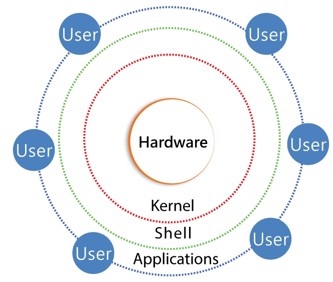

Linux Architecture
Why learn Linux architecture?
Before the layers, understand the problem. A computer has a CPU, memory (RAM), storage, input devices like a keyboard and mouse, and network hardware. These physical parts do the actual work. But users and applications cannot control this hardware directly.
If every program touched hardware on its own:
Memory clashes
Programs would overwrite each other’s memory.
CPU fights
Programs would compete for the CPU at the same moment.
Broken devices, broken trust
Devices would be used incorrectly, security would break down, data would be corrupted and the system would crash.
To prevent this chaos, Linux uses a structured design that safely connects:
That organised design is called Linux architecture.
The layers of Linux architecture
Linux is designed in layers, like a building where each floor has its own job. Each layer talks only to the one directly below it.

Unrolled into a stack, the same layers look like this:
| Layer | Role | What it does |
|---|---|---|
| 1 · Hardware | physical | The actual components: CPU, RAM, disks, devices. |
| 2 · Kernel | translation and control | The software that talks to hardware. It uses drivers (small programs) to know how to speak to specific components such as a graphics card or a hard drive. |
| 3 · Shell | user interface | The bridge between you and the kernel. When you type ls, the shell interprets it and gets the kernel to fetch file information. |
| 4 · User | applications | The programs you actually use to get work done. |
Layer 1 · The hardware layer
Before any code can run, we need the physical machine. Think of it as the engine room of a huge ship: full of powerful machinery, but with no idea where the ship is going. It just waits for instructions.
The key components
CPU · the brain
The Central Processing Unit does all the calculations, millions of logical operations every second.
RAM · short-term memory
A super-fast workspace for the data in use right now. Switch off the power and everything in RAM vanishes.
Storage (HDD/SSD) · long-term memory
Where your files, photos and the operating system itself live while the computer is off.
I/O devices · the senses
Input is how you talk to the computer (keyboard, mouse). Output is how it talks back (monitor, printer).
Peripheral devices · extras
Extra parts like a graphics card (GPU) for gaming and AI, or a network card (NIC) for the internet.
The binary barrier and the language gap
Hardware is digital. It doesn’t understand human language, icons or even text. Inside it are billions of tiny switches called transistors, wired into logic gates. To the hardware, a command is just a pattern of high voltage (1) and low voltage (0).
- 1It doesn’t speak EnglishYell “Print this document!” at a printer and nothing happens.
- 2It only speaks electricityElectrical signals (on or off) and binary instructions (0s and 1s). That’s all.
Because hardware is just metal and silicon speaking in electrical pulses, it needs a manager to give it precise instructions. That manager is the next layer.
Layer 2 · The kernel layer
If the hardware is the computer’s body, the kernel is its manager. It is the most powerful software on your machine, yet you never actually see it. It sits directly between the hardware and everything else, and it is the only part of Linux that talks to the hardware directly.
The kernel’s “Big 5” jobs
1 · Process management
The timekeeper. Each CPU core runs one thing at a time, so the kernel acts like a teacher with a stopwatch, giving each program a tiny slice of time.
2 · Memory management
The space guard. Each app gets its own virtual address space, so App A cannot see App B’s memory. Like a hotel room key: you only open your own room.
3 · Device drivers
The master translator. Click “Print” and the app asks the kernel, which uses a driver (a translation book) to tell the printer exactly what to do.
4 · File system management
The librarian. You save a photo by name; the kernel finds a free spot on disk, stores it, and remembers where it is.
5 · System calls
The permission slip. Apps may not touch hardware. To use the camera, an app files a system call; the kernel checks it is allowed, then does the work.
Layer 2.5 · Kernel space
We know what the kernel does. Now, where does it live? Linux splits memory into two separate worlds: user space, where your apps live, and kernel space, where the boss lives.
A restricted zone
Kernel space is a private area of memory that is off-limits to everyone except the kernel, a high-security vault inside your computer.
Privileged power
Code here runs in the CPU’s privileged mode: “god mode”. It can touch hardware, control power and access any memory, with no restrictions.
Why is this area protected?
“Why can’t my apps live there too?” Because of three walls the kernel keeps standing:
- 1Safety: stop the total crashA tiny bug in a game running in kernel space could crash the entire computer. In user space, if the game crashes, only the game dies. → the rest of the system stays alive
- 2Privacy: stop memory bullyingWithout the wall, a sneaky app could reach into another app’s memory and steal your bank password from the browser. The kernel acts as a security guard for every app’s data.
- 3Order: stop hardware chaosIf every app wrote to the disk at once, they would overwrite each other’s files. Only one manager touches the hardware, so access stays orderly.
Layer 3 · The shell
We have the hardware and the kernel. But the kernel is like a genius scientist who speaks a language too complex for normal humans. You can’t just shout at it. You need a middleman: the shell.
It’s an interface
The shell is a command interpreter, a protective outer layer around the kernel (like the shell around a nut). It’s where human and machine finally meet.
It’s just a program
Chrome is a program for browsing; the shell (for example Bash) is a program for giving commands. It lives in user space like any other app.
What the shell does every time you press Enter
- 1ReadIt reads the words you typed, such as
ls(list files) ormkdir(make a folder). - 2InterpretIt works out what they mean: is it a built-in command, or a program on disk such as
/usr/bin/ls? What are the options and arguments? - 3RequestIt asks the kernel, through system calls, to do the work, for example to start the
lsprogram, which in turn asks the kernel to read the folder.
Why do we need a shell? Computers are literal
They don’t understand intent, only exact requests. Take pwd (“print working directory”):
pwd/home/vishwa/projectsThe kernel keeps track of each program’s current working directory. The shell asks for it and displays the answer as a text path.
The bridge · system calls
User space is a restricted playground; kernel space is a high-security vault. So how does a request cross the line? With a system call.
A system call (syscall) is the official request form an application fills in when it needs something only the kernel can do: read a file, open a network connection, start a program. It is the only doorway from the user world into the kernel world.
| Bank | Computer |
|---|---|
| The lobby where you stand | User space, where the app runs |
| The withdrawal slip | The system call |
| The vault with the money | Kernel space, where the hardware is controlled |
| The bank teller | The kernel |
How it works: you hand the slip to the teller; the teller checks your ID, goes into the vault and brings the money back. If apps could touch hardware directly they could erase the whole system, so the syscall forces them to stop at this security desk.
strace lists every system call a program makes. Try strace ls later: you will see calls like openat, getdents64 and write scroll past.Layer 4 · User space
User space is the computer’s playground, where every app you know lives. Typing in a terminal or watching videos in a browser, you are working in user space. It is a deliberately restricted part of memory: programs can do their own work, but they are forbidden from touching the hardware. They are like hotel guests: they can use the room, but they can’t rewire the electricity in the walls.
What lives in user space?
Terminal and shell
Your tools for giving orders.
Browsers
Chrome, Firefox and friends.
Text editors
Where you write code or notes.
Scripts
Small programs you write to automate tasks.
Why “restricted” is a superpower
- 1One app crashes, the computer stays aliveEvery app runs in its own private box. If the browser freezes and “pops”, it can’t break the kernel or other apps. Close it and carry on.
- 2Your data stays safeApps don’t hold the keys to the hardware. A random game can’t just switch on your microphone or read your photos; it must ask the kernel, which checks the permissions you have set.
- 3Everyone plays fairNo app has god mode, so none can grab all the memory. The kernel makes sure every app gets its fair share of CPU time.
The two worlds: kernel space vs user space
Inside memory, Linux draws a thick line in the sand. The two sides follow very different rules.
| Kernel space · the private office | User space · the public lobby | |
|---|---|---|
| What it is | The high-security inner circle where the core of the system lives. | Where you and your apps live: browser, terminal, music player. |
| Power | Full access. The only place software can touch raw hardware. | Limited. A safe zone; apps can’t touch hardware. |
| If something goes wrong | The whole computer can stop (a “kernel panic”). | Only that app crashes; the rest keeps running. |
| Who is allowed | Only the most trusted code: the kernel and its drivers. | Every ordinary program. |
The big difference: asking for permission
User space cannot talk to hardware directly. To save a file from user space:
- 1You can’t grab the diskNo app may write to the hard drive itself.
- 2Send a system callA formal request note: “please write these bytes to this file”.
- 3Hand it over the wallThe note goes to the kernel.
- 4The kernel checks and actsIt checks you are allowed, then works with the hardware from kernel space on your behalf.
Permission denied or Too many open files, that is the kernel refusing a system call. Knowing that every file, socket and GPU request goes through the kernel tells you where to look: permissions, limits (ulimit) and kernel logs (dmesg).Execution flow: what happens when you type ls
You type ls and press Enter. In a split second, the request makes a full round trip through every layer:
- 1You (the user)In user space, you type
lsinto the terminal. You have only given an order; nothing has touched the hardware yet. - 2The shell (the translator)The terminal hands your text to the shell (e.g. Bash). It understands “the user wants to list files”, finds the program
ls, and asks the kernel to start it (a system call). - 3The kernel (the boss)The
lsprogram asks the kernel, again by system call, for the folder’s contents. The kernel checks: “Is this user allowed to read this folder?” If yes, it looks up its file-system map to find where the folder lives on disk. - 4The hardware (the muscles)Through the disk driver, the kernel signals the SSD/HDD. The disk reads the data, such as the names
photo.jpgandnotes.txt, and sends the raw data back. - 5Back to the kernelThe kernel turns the raw disk data into a clean list of file names and hands it back across the wall to
ls. - 6Back in user space
lsdecides how to show the names: sorted alphabetically, and often coloured (folders in blue). - 7The resultThe text is written to your terminal window (one last system call), and you see:
lsmy_code.py notes.txt photo.jpgKey terms
- Linux architecture
- The layered design (hardware, kernel, shell, user applications) that safely connects users and software to the hardware.
- Hardware layer
- The physical components (CPU, RAM, storage, I/O and peripheral devices) that do the actual work and only understand binary electrical signals.
- CPU
- The Central Processing Unit, the “brain” that performs calculations and runs program instructions.
- RAM
- Fast, temporary working memory for data in use right now; its contents vanish when the power is switched off.
- Kernel
- The core of Linux that manages processes, memory, devices and files, and is the only software that talks to hardware directly.
- Device driver
- A piece of kernel code that knows how to talk to one specific kind of hardware, such as a printer, disk or graphics card.
- Virtual address space
- The private view of memory the kernel gives each program, so one app cannot read or overwrite another app’s memory.
- Kernel space
- The protected region of memory and privileged CPU mode where the kernel runs with full access to the hardware.
- User space
- The restricted area where ordinary programs (shell, browser, editors, scripts) run without direct hardware access, so a crash stays contained.
- System call (syscall)
- The official request a program makes to the kernel to do privileged work such as reading a file or starting a program; the only way from user space into kernel space.
- Shell
- A command interpreter program (e.g. Bash) that reads what you type, works out what it means and asks the kernel to carry it out.
- Time slicing
- The kernel’s trick of switching a CPU core between programs every few milliseconds so they appear to run at the same time.
Self-check
Pick an answer. You’ll see right away whether it’s correct and why.
Why can’t applications control the hardware directly?
- Hardware is too slow for apps
- Programs would clash over memory, CPU and devices, causing crashes and security holes
- Apps are written in English
- Only the shell is allowed to touch hardware
Direct access would let programs overwrite each other and corrupt data, so the kernel controls all hardware.
Which layer uses drivers to talk to a graphics card?
- User layer
- Shell layer
- Kernel layer
- Hardware layer
Drivers are part of the kernel; they translate generic requests into device-specific instructions.
A browser tab has a bug and crashes. Why does the rest of the computer keep running?
- The browser runs in user space, isolated from the kernel and other apps
- The shell restarts it instantly
- The browser runs in kernel space
- RAM is wiped every second
User-space programs live in their own protected boxes, so a crash stays contained.
What is a system call?
- A phone call to tech support
- A command typed only by the root user
- A message from hardware to the user
- A program’s formal request asking the kernel to do privileged work
Syscalls are the only doorway from user space into the kernel, like a withdrawal slip handed to a bank teller.
Your laptop has one CPU core, yet music and a browser run “at the same time”. How?
- The music app runs on the GPU
- The kernel switches between them in tiny time slices
- The shell runs one of them
- They share the same memory
Process management gives each program a few milliseconds in turn, fast enough to look simultaneous.
In the bank analogy, who is the bank teller?
- The user
- The shell
- The kernel
- The hard drive
Only the kernel holds the key to the vault (hardware) and acts on requests passed through the window.
When you run ls, which part actually reads the folder data from the disk?
- The kernel, through the disk driver
- The terminal window
- The shell, by touching the SSD directly
- The
lsprogram, bypassing the kernel
User-space programs (shell, ls) only ask. The kernel checks permissions and drives the hardware.
Which is TRUE about the shell?
- It is part of the kernel
- It runs in kernel space
- It is the hardware’s firmware
- It is an ordinary user-space program that interprets your commands
The shell is just a program, like a browser, that turns your typed commands into requests to the kernel.
All of it, in one sentence
Linux is a stack of hardware, kernel, shell and user space: apps and the shell live in restricted user space and must hand system calls to the kernel, which alone controls the hardware in protected kernel space.
— Vishwa Mohan